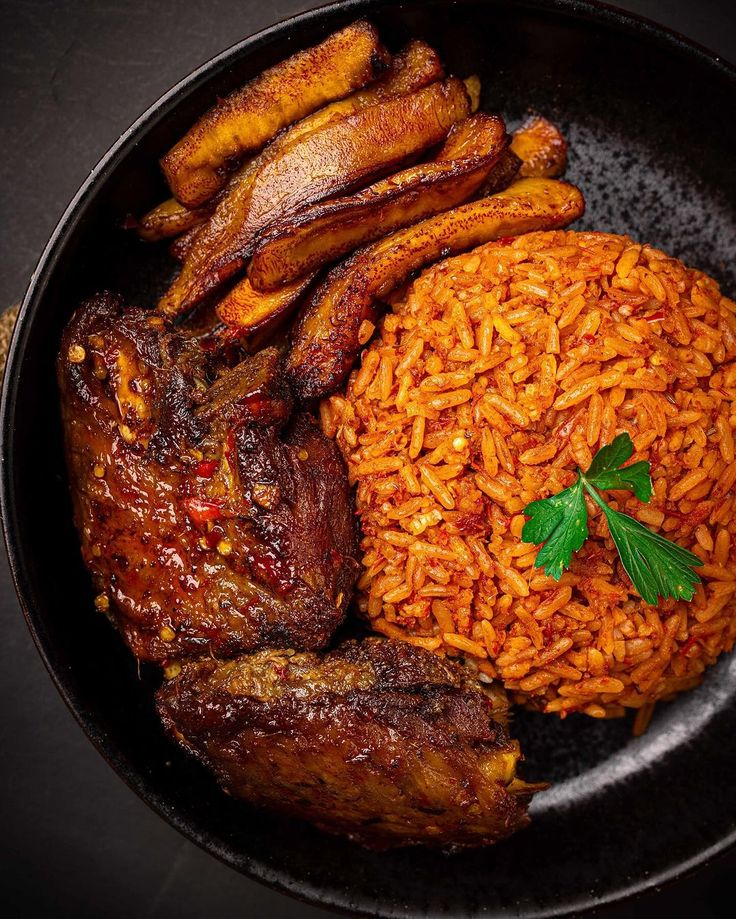

Nigerian Jollof Rice

An image of Nigerian Jollof Rice
Description
Nigerian jollof rice is an aromatic, one-pot rice dish known for its vibrant red-orange color and smoky party aroma. Long-grain parboiled rice is cooked directly in a reduced blend of red bell peppers, plum tomatoes, scotch bonnets, onions, and rich stock.
By sealing the pot tightly and cooking over gentle heat, the rice absorbs the savory sauce completely through steam, finishing with a slightly scorched bottom layer that gives authentic Nigerian jollof its beloved smoky taste.
Ingredients
- 3 cups long-grain parboiled rice
- 5 fresh plum tomatoes
- 3 red bell peppers (tatashe)
- 3 scotch bonnet peppers (ata rodo)
- 2 medium red onions (1 for blending, 1 for slicing)
- 1/4 cup tomato paste
- 3 cups seasoned chicken stock
- 1/2 cup vegetable oil
- 2 dried bay leaves
- 1 tablespoon curry powder
- 1 tablespoon dried thyme
- 2 bouillon cubes
- 1 teaspoon salt
Steps
- Blend the tomatoes, red bell peppers, scotch bonnet peppers, and one onion into a smooth puree.
- Pour the puree into a pot and boil over medium-high heat until the liquid reduces into a thick tomato paste
- Heat vegetable oil in a large pot and fry the sliced onions until soft and translucent.
- Stir in the canned tomato paste and fry for 5 minutes over medium heat.
- Add the reduced pepper puree, curry powder, thyme, bay leaves, bouillon cubes, and salt, frying for 10 minutes until oil floats to the top.
- Pour in the chicken stock and bring the seasoned stew to a rolling boil.
- Wash the parboiled rice thoroughly in warm water until clear, then drain completely.
- Add the drained rice into the boiling stew, ensuring the liquid just covers the grains
- Cover the pot with aluminum foil and seal the lid firmly to trap the steam inside.
- Reduce the heat to low and cook undisturbed for 30 minutes until the rice is tender and dry.
- Turn the heat up to medium for 3 to 5 minutes to create the signature smoky bottom crust, then fluff gently with a wooden spoon.
Odin Recipes